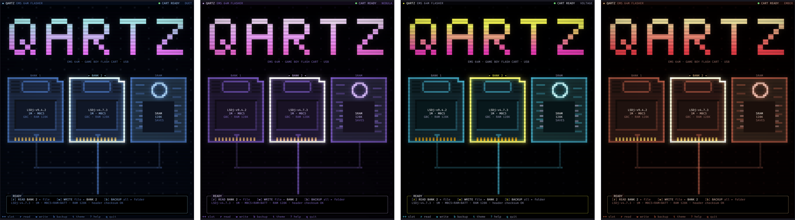

QARTZ
Music: an LSDj track by m64. Transfers sped up for the video.
what this is
The EMS 64M is the USB flash cart a lot of Game Boy musicians keep LSDj on: two 4 MB ROM banks and one 128 KB battery-backed save RAM — where the songs live. The app that flashed it, ems-qart, is a Qt app from 2016 that no longer opens on a current Mac.
qartz is its replacement, rebuilt from scratch in Zig on movy: the two banks and the SRAM become pixel-art slots on a glowing PCB bus, and during a transfer the data runs along the traces as packets of light — cart to computer on a read, computer to cart on a write, and back again for the verify. Plus a plain CLI for scripts.
download
Or straight from a terminal — then just run qartz:
curl -L https://github.com/M64GitHub/qartz/releases/latest/download/qartz-macos-universal.tar.gz | tar xz mv qartz-*-macos-universal/qartz /usr/local/bin/
Downloaded in a browser instead? qartz is ad-hoc signed, not notarized — clear the quarantine flag once:
xattr -d com.apple.quarantine qartz. Linux: build from source with zig build
(needs libusb and a udev rule).
what it does
- Read any slot into a file, write a file into any slot — the labels show what the cart really holds: title, size, mapper, GBC flag, RAM.
- Every write is verified by reading it all back; every ROM dump is checked against the ROM's own global checksum.
- Backup: both banks and the SRAM — your songs — into one folder, named after the ROM titles.
- Hotplug: plug the cart in and the slots power on, left to right. USB hubs are fine.
- Safe: a write asks before it flashes and asks twice before it aborts; closing the window or Ctrl+C finish the USB block in flight, so the cart is never left hanging.
- A fuzzy file picker with favorites, and a confirm screen that shows the file's header next to what the bank holds now.

t cycles all eleven, with a crossfade← → 1 2 3pick a slot
r · wread the slot · write a file into it
bback up everything
t · Tnext · previous theme
esc · qcancel a transfer · quit
qartz info # cart status + both banks qartz read rom 1 lsdj.gb # dump a bank qartz write rom 2 lsdj.gb # flash + verify qartz backup ~/lsdj-backup # everything
how it's built
on the screen
movy's Frame: a float framebuffer with a persistent glow buffer that blurs and decays every frame — the bloom on the carts and the trails behind the packets come from there, for free. Half-block pixels, a dirty-row ANSI writer, 60 fps at about 3% CPU when idle.
The file picker, the widgets and the eleven themes come from DUET, my tracker — the DMG green is qartz's own.
on the wire
One worker thread owns the cart: it watches the USB bus, reads both bank headers when the cart arrives, and runs the jobs while the UI only reads snapshots. libusb is compiled in, so the macOS binary needs nothing installed.
The USB protocol is ems-qart's, which got it from ems-flasher. Tested on a real EMS 64M through a USB hub. Written with Claude Code.
links
github.com/M64GitHub/qartz · releases · movy · DUET
USB protocol: ems-qart by Riccardo Binetti, from ems-flasher by Mike Ryan. GPL-3.0-or-later.